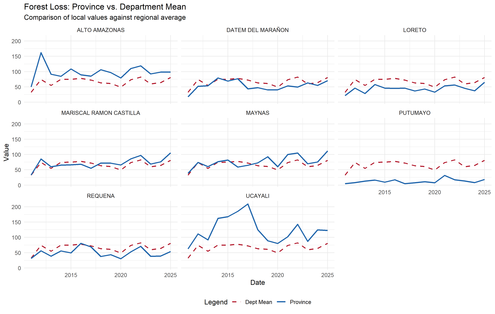
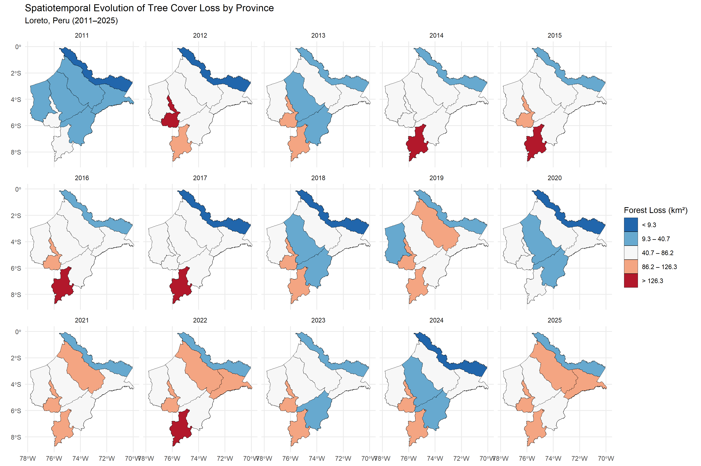
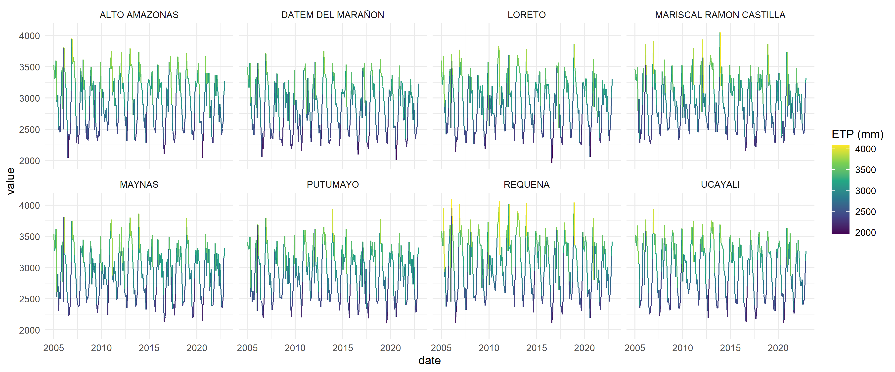

Calculate and extract remote sensing metrics for spatial health analysis 🛰️. This package offers R users a quick and easy way to obtain areal or zonal statistics of key indicators and covariates, ideal for modeling infectious diseases 🦠 within the framework of spatial epidemiology 🏥.
1. Installation
You can install the development version with:
# install.packages("pak")
pak::pak("harmonize-tools/land4health")── Welcome to land4health ───────────────────────────────────────────────────────────────────────────
A tool of the Harmonize Project to calculate and extract Remote Sensing Metrics for Spatial Health
Analysis.
Currently,`land4health` supports metrics related to the following categories:
• Accessibility
• Climate
• Environment
• and more!
For more information about metrics, please use the `l4h_list_metrics()` function.
Attaching core land4health packages:
→ rgee v1.1.8
→ sf v1.1.3
# l4h_install()
ee_Initialize(user = 'REGISTERED GOOGLE EARTH ENGINE ACCOUNT@gmail.com')#> ── rgee 1.1.8 ──────────────────────────────────────── earthengine-api 1.7.38 ──
#> ✔ user: REGISTERED GOOGLE EARTH ENGINE ACCOUNT@gmail.com
#> ✔ Initializing Google Earth Engine: ✔ Initializing Google Earth Engine: DONE!
#> ✔ Earth Engine account: projects/1009866941441/assets/NAME_ASSETS
#> ✔ Python Path: C:/Python314/python.exe
#> ────────────────────────────────────────────────────────────────────────────────2. List of available metrics
l4h_list_metrics()
#> # A tibble: 10 × 11
#> category metric pixel_resolution_met…¹ dataset start_year end_year
#> <chr> <chr> <chr> <chr> <int> <int>
#> 1 Human intervention Defore… 30 Hansen… 2000 2023
#> 2 Human intervention Human … 300 Global… 1990 2017
#> 3 Human intervention Popula… 100 WorldP… 2000 2021
#> 4 Human intervention Urban … 500 MODIS … 2001 2022
#> 5 Human intervention Night … 500 VIIRS … 1992 2023
#> 6 Human intervention Human … 30 Global… 1975 2030
#> 7 Environment Urban … 1000 Urban … 2003 2020
#> 8 Accessibility Travel… 927.67 Malari… 2019 2020
#> 9 Accessibility Rural … 100 Rural … 2024 2024
#> 10 Climate Evapot… 500 geeSEB… 2002 2022
#> # ℹ abbreviated name: ¹pixel_resolution_meters
#> # ℹ 5 more variables: resolution_temporal <chr>, layer_can_be_actived <lgl>,
#> # tags <chr>, lifecycle <chr>, url <chr>
#> ... (2 more)3. Example: Calculate Forest Loss in a Custom Region
This example demonstrates how to calculate forest loss between 2005 and 2020 using a custom polygon and Earth Engine.
# install.packages('pak')
# pak::pkg_install('ambarja/geoidep')
library(geoidep)
# Downloading the adminstration limits of Loreto provinces
provinces_loreto <- get_provinces(show_progress = FALSE) |>
subset(nombdep == "LORETO")
# Run forest loss calculation
result <- provinces_loreto |>
l4h_forest_loss(from = '2011-01-01', to = '2025-01-01', sf = TRUE)
head(result)
#> Simple feature collection with 6 features and 8 fields
#> Geometry type: MULTIPOLYGON
#> Dimension: XY
#> Bounding box: xmin: -75.78115 ymin: -4.709709 xmax: -72.11719 ymax: -0.63937
#> Geodetic CRS: WGS 84
#> # A tibble: 6 × 9
#> ccdd ccpp fuente nombdep nombprov date variable value
#> <chr> <chr> <chr> <chr> <chr> <date> <chr> <dbl>
#> 1 16 01 V Censo Nacional Econo… LORETO MAYNAS 2011-01-01 forest_… 38.3
#> 2 16 01 V Censo Nacional Econo… LORETO MAYNAS 2012-01-01 forest_… 73.9
#> 3 16 01 V Censo Nacional Econo… LORETO MAYNAS 2013-01-01 forest_… 60.5
#> 4 16 01 V Censo Nacional Econo… LORETO MAYNAS 2014-01-01 forest_… 76.7
#> 5 16 01 V Censo Nacional Econo… LORETO MAYNAS 2015-01-01 forest_… 81.9
#> 6 16 01 V Censo Nacional Econo… LORETO MAYNAS 2016-01-01 forest_… 59.0
#> # ℹ 1 more variable: geometry <MULTIPOLYGON [°]>
# Visualization with ggplot2
library(ggplot2)
library(dplyr)
# Mean by departamentos
df_mean <- result |>
st_drop_geometry() |>
group_by(date) |>
summarise(mean_val = mean(value, na.rm = TRUE))
ggplot() +
geom_line(
data = df_mean,
aes(x = date, y = mean_val, color = "Dept Mean"),
linetype = "dashed",
linewidth = 0.8
) +
geom_line(
data = st_drop_geometry(result),
aes(x = date, y = value, color = "Province"),
linewidth = 1
) +
facet_wrap(~ nombprov) +
scale_color_manual(values = c("Dept Mean" = "#B2182B", "Province" = "#2166AC")) +
labs(
title = "Forest Loss: Province vs. Department Mean",
subtitle = "Comparison of local values against regional average",
x = "Date",
y = "Value",
color = "Legend"
) +
theme_minimal() +
theme(legend.position = "bottom")
result_clean <- result |>
mutate(
year = format(as.Date(date), "%Y"),
nombprov = toupper(trimws(as.character(nombprov)))
)
q_vals <- quantile(
result_clean$value,
probs = c(0, 0.05, 0.25, 0.75, 0.95, 1),
na.rm = TRUE
)
q_labs <- c(
paste0("< ", round(q_vals[2], 1)),
paste0(round(q_vals[2:4], 1), " – ", round(q_vals[3:5], 1)),
paste0("> ", round(q_vals[5], 1))
)
pal <- c("#2166AC", "#67A9CF", "#F7F7F7", "#F4A582", "#B2182B")
result_clean %>%
mutate(
loss_cat = cut(
value,
breaks = q_vals,
labels = q_labs,
include.lowest = TRUE
)
) %>%
ggplot() +
geom_sf(aes(fill = loss_cat), color = "#000000", linewidth = 0.15) +
scale_fill_manual(
name = "Forest Loss (km²)",
values = setNames(pal,q_labs)
) +
facet_wrap(~ year, ncol = 5) +
labs(
title = "Spatiotemporal Evolution of Tree Cover Loss by Province",
subtitle = "Loreto, Peru (2011–2025)"
) +
theme_minimal(base_size = 10)
4. Example: Extract time series of climate variables
etp_ts <- provinces_loreto |>
l4h_sebal_modis(
from = "2005-01-01",
to = "2022-12-31",
by = "month"
)
etp_base <- etp_ts |>
st_drop_geometry() |>
mutate(
nombprov = toupper(trimws(as.character(nombprov))),
month = as.numeric(format(as.Date(date), "%m"))
)
etp_loreto <- etp_base |>
group_by(month) |>
summarise(mean_loreto = mean(value, na.rm = TRUE), .groups = "drop")
etp_diff <- etp_base |>
group_by(nombprov, month) |>
summarise(mean_prov = mean(value, na.rm = TRUE), .groups = "drop") |>
inner_join(etp_loreto, by = "month") |>
mutate(
ymax_pos = pmax(mean_prov, mean_loreto),
ymin_neg = pmin(mean_prov, mean_loreto)
)
head(etp_diff)
#> # A tibble: 6 × 6
#> nombprov month mean_prov mean_loreto ymax_pos ymin_neg
#> <chr> <dbl> <dbl> <dbl> <dbl> <dbl>
#> 1 ALTO AMAZONAS 1 3165. 3106. 3165. 3106.
#> 2 ALTO AMAZONAS 2 3459. 3430. 3459. 3430.
#> 3 ALTO AMAZONAS 3 3264. 3192. 3264. 3192.
#> 4 ALTO AMAZONAS 4 3214. 3128. 3214. 3128.
#> 5 ALTO AMAZONAS 5 2912. 2915. 2915. 2912.
#> 6 ALTO AMAZONAS 6 2736. 2751. 2751. 2736.
ggplot(etp_diff, aes(x = month)) +
geom_ribbon(
aes(ymin = mean_loreto, ymax = ymax_pos, fill = "Above Average"),
alpha = 0.6
) +
geom_ribbon(
aes(ymin = ymin_neg, ymax = mean_loreto, fill = "Below Average"),
alpha = 0.6
) +
geom_line(
aes(y = mean_loreto),
color = "#475569",
linetype = "dashed",
linewidth = 0.7
) +
geom_line(
aes(y = mean_prov),
color = "#0F172A",
linewidth = 0.8
) +
facet_wrap(~ nombprov, ncol = 4) +
scale_fill_manual(
name = "Regional Deviation",
values = c(
"Above Average" = "#EF4444",
"Below Average" = "#3B82F6"
)
) +
scale_x_continuous(
breaks = c(1, 4, 7, 10),
labels = c("Jan", "Apr", "Jul", "Oct")
) +
labs(
title = "Provincial ETP Differential vs. Regional Average",
subtitle = "Dashed line: Loreto Average | Red: ETP Excess | Blue: ETP Deficit",
x = NULL,
y = "Average ETP (mm)"
) +
theme_minimal(base_size = 8) +
theme(legend.position = "bottom")